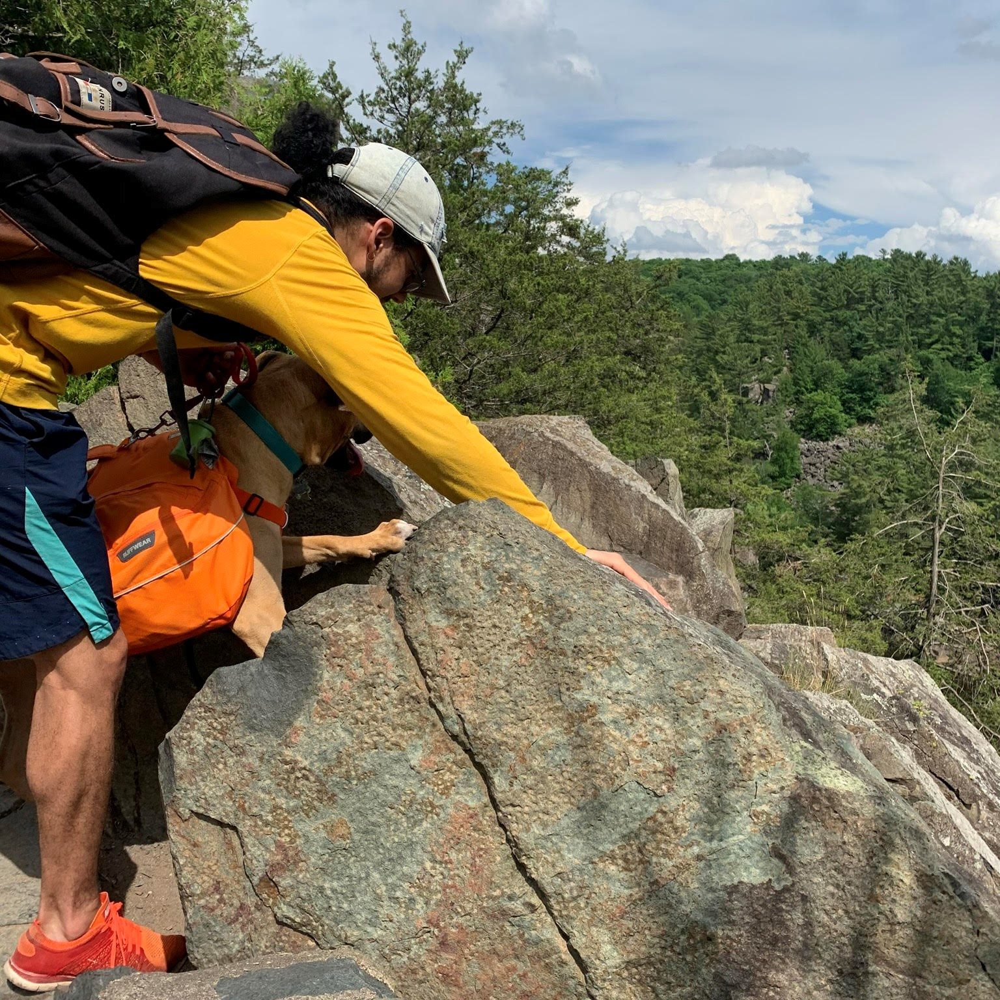
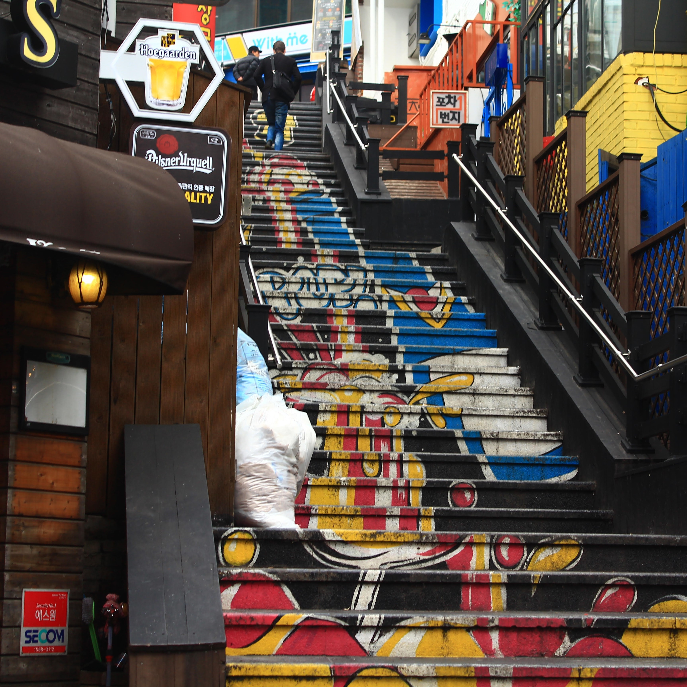
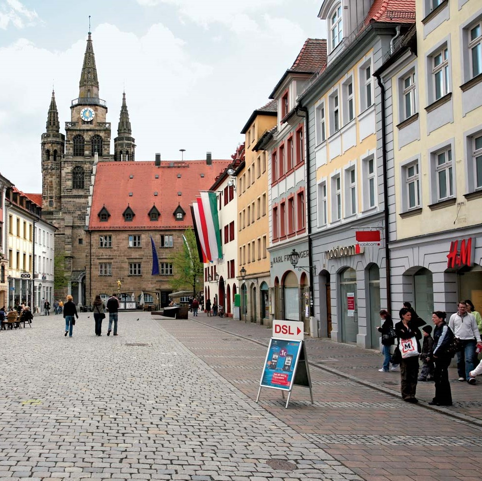
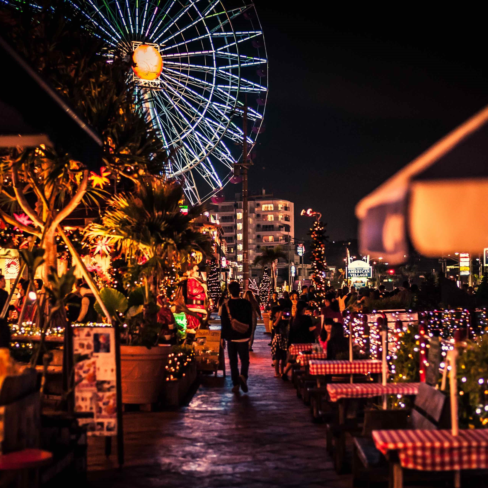

Why Software Engineering?
I wasn’t always aware that I wanted to pursue a career in software engineering. However, I did know from a young age that I love uniquely solving problems and that I wanted to do that for the rest of my life. This is what led me to the engineering world, but I went a more traditional route by choosing chemical engineering, due to my love of chemistry. I quickly realized from my courses in chemical engineering that even though we were solving problems we were doing so with our hands being held through the process. I wanted to solve problems with minimal help, just a few tools to help me reach my goal.
After taking an introductory level Java course I quickly realized that programming perfectly encapsulated this solving problems, uniquely and with minimal hand holding. Sure in the beginning it seems that there is no wiggle room. For example, declaring two integer variables and printing their sum can pretty much only be done one way! As you get into more advanced and complex tasks there are so many ways to code the same thing and that is where the uniqueness comes into play. Sure you’ll always prefer O(n) time over O(n2) time, but how do you get to that point? Better yet, can you get to that point?
Ultimately, I am pursuing a career in software development to be able to uniquely solve problems without someone guiding me every step of the way.
After taking an introductory level Java course I quickly realized that programming perfectly encapsulated this solving problems, uniquely and with minimal hand holding. Sure in the beginning it seems that there is no wiggle room. For example, declaring two integer variables and printing their sum can pretty much only be done one way! As you get into more advanced and complex tasks there are so many ways to code the same thing and that is where the uniqueness comes into play. Sure you’ll always prefer O(n) time over O(n2) time, but how do you get to that point? Better yet, can you get to that point?
Ultimately, I am pursuing a career in software development to be able to uniquely solve problems without someone guiding me every step of the way.
Hobbies
Zeus and Dog Training
When I got Zeus in the summer of 2019 I found myself very interested in dog training and how we can, in a way, communicatate with dogs. Since then he has grown quite a bit, going from a 10 pound ball of craziness to an 85 pound cuddle bug.

Hiking and Outdoors
I have always found that I love to spend time outside and in nature. I think a big reason I enjoy spending time in nature is the idea of just enjoying my surroundings and not being constantly distracted by technology. Please enjoy this image of me trying to get Zeus to appreciate the view.Photography and Cameras
I like both analog and digital photography. I own 3 analog cameras, because they are cheap, but also because I prefer film photography to digital. I do have a digital camera and use it more often, mostly because it is significantly more affordable per frame. This is a picture that I took on a family trip to Korea!

Soccer
I have been playing soccer for as long as I can remember! I have played in many different positions, but left wing will always be my favorite. Soccer was definitely one of those things that made moving around significantly easier.Where Are You From?
Most wouldn't consider this a difficult question to answer, but I certainly do. This question is difficult for me to answer due to the fact that my dad joined the Army when I was a baby. Our first move was to Germany, the country I have lived in the longest. Although we did move around a few times and I attended 2 elementary schools, we were always in the same general area. The reason we ended leaving Germany was because my dad did not extend his contract with the Army. During this time, my mom was working on securing a position as a teacher with the Department of Defense Education Activity. Her new position sent us to Okinawa, Japan even though that was our last choice of a dozen different places. We moved away from Okinawa due to a bad case of Island Fever. After all, you can drive around the entire island in just 2 hours. After that, schools and jobs just kept closing and the government kept on relocating us.

Miami, Florida
I was born in Miami, Florida. I don't remember it at all, but according to my parents we could see the Sunlife Stadium from our house! We moved to Germany when I was about 2 years old.Ansbach, Germany
I lived in this general area of Germany for about 9 years. The town would have a Christmas fest every year on the street pictured to the right. Don't skip out on the hot apple cider!


Okinawa, Japan
I lived in Okinawa for 2 years. Mihama, or American Village, is pictured to the left. This area was right outside of the Air Force Base gate and was where I realized I love butter chicken curry.Tokyo, Japan
The Sensoji temple in Asakusa is pictured to the right and is my absolute favorite temple in Tokyo. After living here 2 years I remember being very confused when I heard we would be moving to Alabama.Prattville, Alabama
Going into a high school with 2,500 students from a middle school with about 200 students was definitely a shocker. Pictured is the haunted cotton gin downtown. Let's just say that I don't think it is haunted.Tokyo, Japan
Finally, I graduated high school on Yokota AFB in Tokyo, Japan. Pictured is okonomiyaki, a Japanese dish I discovered I love while in Hiroshima for a soccer tournament. I can't wait for the day I get to go back to Japan.